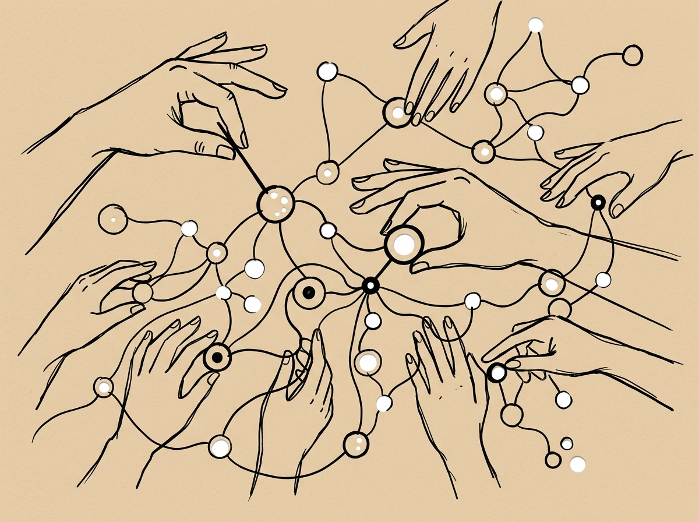
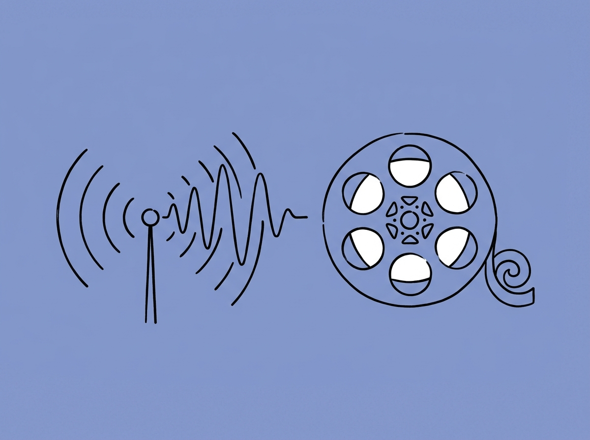
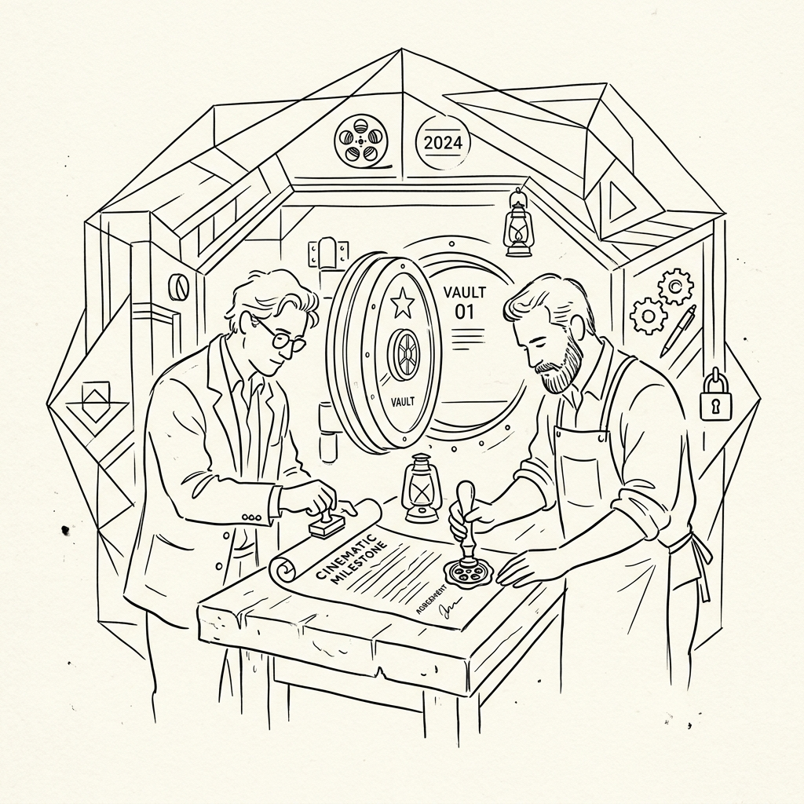
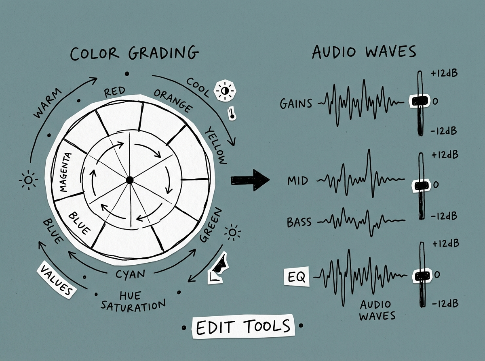

The Coordination Layer Behind Entertainment
DigiSynq connects verified talent, IP, stages, gear, capital and distribution into executable production pathways. We don't own the assets. We make them move.
The 6-Stage Operational Lifecycle
Six sequential layers turning fragmented industry assets into synchronized, executable production pathways.
Measure • Audit & Capability Verification
Dormant screenplays, unscheduled technicians, and dark soundstages represent locked capacity. Stage 01 audits and verifies technical specifications, availability windows, and insurance limits before counterparties connect.
- check_circle Verified identity & credentials: Peer-reviewed checks confirm professional filmographies and equipment serial status.
- check_circle Technical capability indexing: Tagging across optical packages, specialized stages, acoustic volumes, and finishing color suites.
- check_circle Risk baseline calculation: Objective assessment of scheduling friction and insurance covenants before introduction.

Connect • Constraint-Checked Resource Matching
Information silos and regional borders stall projects. Stage 02 connects verified talent, equipment packages, and facilities directly into active production schedules without opaque intermediary markups.
- check_circle Cross-regional routing: Connect verified technical talent across Mumbai, Hyderabad, Chennai, and Bengaluru hubs.
- check_circle Dark-day facility yield: Monetize unbooked soundstage gaps and idle camera fleets with verified productions.
- check_circle Rapid crew replacement: Fast coordination response to replace dropped HODs or specialized technicians on set.

Optimize • Standardized Scope & Milestones
Informal handshakes produce payment disputes and scope creep. Stage 03 establishes modular, legally structured service agreements with unambiguous milestone deliverables, inspection windows, and locked compensation.
- check_circle Standardized SLAs: Clear contract templates with explicit role definitions, deliverables, and turnaround times.
- check_circle Milestone-bound payouts: Financial tranches mapped to objective delivery proof, never vague subjective approval.
- check_circle Clean room IP protection: Non-disclosure covenants and timestamped registry protect script treatments from unauthorized leakage.

Deploy • Live Telemetry & DPR Monitoring
Uncoordinated call sheets burn budget contingency. Stage 04 provides live production telemetry — monitoring call sheets, camera roll pace, and daily rushes turnover to resolve bottlenecks proactively.
- check_circle Daily Production Reports (DPR): Verified attendance and wrap timecards eliminate disputed billing.
- check_circle Proactive variance alerts: Early detection of schedule slip before downstream post-production timelines are impacted.
- check_circle Verified asset turnover: Confirmation of raw footage ingest and audio timecode sync prior to stage release.
Settle • Regulated Escrow Disbursement
Technicians and vendors should never have to chase payments. Capital deposited with regulated partner banks releases automatically upon verified milestone turnover and dual-signoff concurrence.
- check_circle Regulated bank custody: All client funds are held securely in partner scheduled commercial bank escrow accounts.
- check_circle Dual-signoff release: Objective verification instructions trigger automated settlement directly to vendor accounts.
- check_circle Two-stage mediation: Structured technical panel arbitration resolves delivery variance quickly without legal stalls.
Learn & Repeat • Compounding Precision
Completed productions inform future network matches. Verified performance data updates participant reliability scores, while established partner pairings unlock expedited contracting for subsequent slates.
- check_circle Empirical yield analysis: Post-wrap review compares budget-to-actual and schedule variance to optimize future synqs.
- check_circle Peer verification badges: Objective performance proof updates guild standing without subjective favoritism.
- check_circle Pre-cleared fast track: High-performing pods bypass preliminary diligence on subsequent co-productions.

Stakeholder Interaction Models
How participants across the 8 resource categories synchronize through DigiSynq's coordination infrastructure.
Directors & Creators
Access pre-cleared craft pods, verified budget packaging, and guaranteed stage dates without broker markup.
Producers & Production Execs
Transparent rate cards, rapid crew replacement, and structured milestone escrow that prevents cost overruns.
Cinematographers & Sound HODs
Verified credit records, continuous schedule booking, and guaranteed escrow clearance upon wrap signoff.
Screenwriters & Rights Owners
Clean room registry, director attachment packaging, and direct evaluation by qualified producers.
Studio Complexes & Backlots
Monetize dark-day gaps between scheduled slates, insured bookings, and escrow-guaranteed payouts.
Financiers & Private Funds
Tranche-gated capital deployment, real-time burn-rate monitoring, and verified milestone delivery proofs.
Objective Verification Over Industry Rumors
Entertainment has historically operated on word-of-mouth hearsay and opaque relationships. DigiSynq is piloting an objective, empirical reputation framework based on verified milestone deliveries, call-sheet punctuality, and escrow completion records.
Peer Craft Syndicate Benchmark • Controlled Pilot Deployment
Milestone Escrow: 4-Step Settlement Flow
All client funds are held securely by regulated partner scheduled commercial banks. Funds disburse only upon verified milestone delivery and dual signoff.
Tranche Deposit
Producer deposits milestone capital into a segregated partner bank escrow account prior to resource mobilization.
Shoot Execution
Cast, crew, soundstages, and gear houses deploy with certainty that capital is locked in their name.
Technical Verification
Objective milestone proof (DPR wrap signoff, raw footage ingest, sound master delivery) is confirmed by counterparties.
Direct Settlement
The partner bank executes direct account-to-account settlement via RTGS / NEFT within 24 hours of dual concurrence.